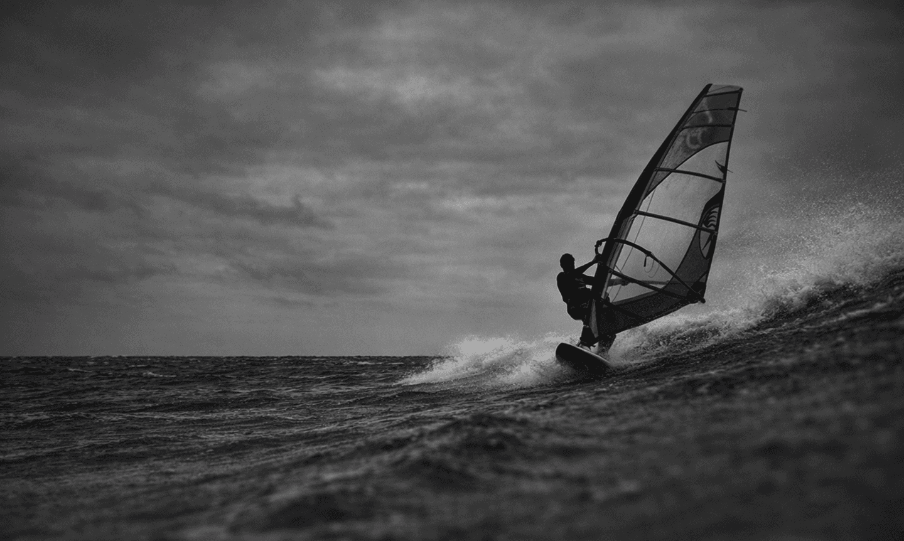
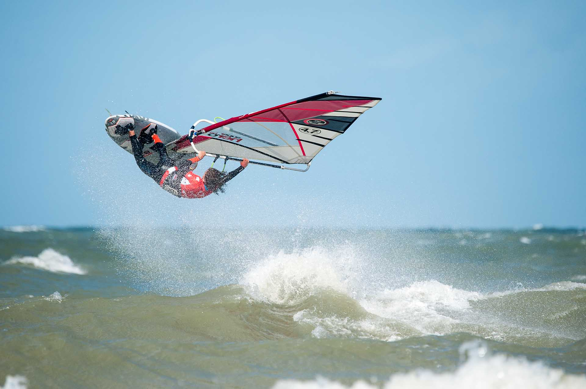

Jury & scoring
Rulez
Hieronder volgt een algemene indeling van de manoeuvres met de hoogste tot de laagste score. De scores ernaast dienen slechts als richtlijn voor de juryleden en zijn geen bindende regel.
OPEN Belgian Championship
Wave 2025
4 October 2025:
- Inscription
- 8h50 Windekind surfclub, Zuidenwindhelling 1 Oostduinkerke
- Briefing
- 9h30 First heat: 10h
Categories:
- Men Open
- Women
- U21
- U19
- U17
- U15
- U13
Info
The event will be run with elimination ladders, wich will be presented at 9h50 at the race office
The race office is in the blue federation trailer of the WWSV
Heat time and transition time will be made public during the briefing
Number of waverides and jumps to be scored per heat will be announced during the briefing and can be changed during the event, so get informed at the trailer before your heate
It is an open Championship, so open for foreigners to participate in the same elimination ladder as the Belgians. There will be two results. One for fort he Open, one for Belgian participants
When a heat is canceled it will be rerun, either directly or later
There are no flags, the lights serve as information. In the race office the explication of the meaning of the lights will be hung out
Participants should wear a coloured lycra during the heat, if the lycra is lost or not and the rider can not obtain it, he will still be judged during his heat.
If a rider is injured and in need of help and needs to get rescued by a fellow competitor in that heat and the helping competitor ask the rerun the heat , the heat will be rerun
The rider that picks up the swell first has the right of way on that wave. If two riders pick up a swell at the same time, the rider upwind on that wave has the right of way
Riders going out through the breaking surf have rigth of way compared to riders coming in. Once behind the breaking surf, port has priority over starboard
wave riding guidelines
Competitors will be judged primarily on the fundamental principals of good wave riding - speed, fluidity, power and their proximity to the critical section of the wave. In general a more vertical approach to the lip, initiated by a committed, powerful bottom turn will score more highly than a more horizontal “down the line” style of ride. Directional changes will be assessed on the degree to which direction is changed and on the speed and fluidity with which this change is achieved. The amount of spray thrown out during the turn, will tend to indicate the severity of the directional change.
Cutbacks will be scored considering the vertical aspect of the approach, the proximity to the critical section of the wave, how deep inside the lip the turn is made and the speed and power with which the manoeuvre is executed. The sailor who is committed deep into the face of the wave will score more highly.
Aerial manoeuvres will enhance the score but there should be clear differentiation between simple hops after riding straight down the line and aerials that are performed by bottom turning back up the face and hitting the lip. Aerials should be executed in a controlled fashion and a manoeuvre that is cleanly “tweaked” shall score more highly than one that is ragged or twitchy in the air. The sailor that uses the wave and “hits” the lip to create the aerial will score more highly than one who simply hops off the top of the wave.
Freestyle manoeuvres will only enhance the wave score if intergrated into the wave ride and are performed in a critical part of the wave. Sailors who simply set up for one freestyle move on the wave will not be scored higher compared with a sailor who has ridden the wave. It should always be considered that this is the waveriding category, however pushing the sport with radical manoeuvres will be rewarded.
To gain maximum points sailors should demonstrate as wide a variety of different skills as possible. A sailor who performs both cutbacks and aerials should in general score more highly than a sailor who performs the same move repeatedly as should a sailor who includes front and backside riding and any number of other manoeuvres during the ride. Sailors who simply blast down the line and perform one big move will not be scored as highly as those who really ride the wave, but only if the turns and manoeuvres performed are of a high standard. In general quantity should not be scored more highly than quality.
Whilst wave selection is a factor in scoring, it should only influence scoring between 2 equally well ridden waves. In general, a sailor who rides a smaller wave well, shall score more highly than a sailor that takes a bigger wave but does not ride it as well as the smaller one.
Sailors who take risks and perform more radical manoeuvres should be rewarded more than sailors who “play safe” provided that manoeuvres are completed in a reasonably controlled fashion.
MANOEUVRES
One-handed manoeuvres enhance difficulty and score, but the difficulty of the basic manouvre should be taken into account. A sailor who performs a much more difficult manoeuvre should be more highly rewarded than a sailor who simply removes one hand during an average manoeuvre.
To encourage progress in wave manoeuvres, new moves will be scored highly, but only if executed in a controlled fashion.
If it is difficult to clearly determine individual waves, then the entire sail in may be scored as one wave. Sailors will be informed of this at the skippers meeting or at the check in.
If a sailor is on a wave at the end of a the heat, that wave will continue to be scored until the sailor exits the wave.

Generalisation of highest scoring wave manoeuvres
(Points are relative)
- Off the lip back loops10pt
- Off the lip air 360 deg. (air Takas, Goiters, frontside wave 360)9pt
- Off the lip forward loop8pt
- Table top aerials7pt
- Off the lip aerials6pt
- Upwind 360 non air (waveshaka),non air taka5pt
- Vertical snappie rides4pt
- Forward loop in the chop3pt
- horizontal waveride3pt
Jumping
JUMP SCORING
At events where more than one jump is scored, jumps must be different unless otherwise specified in the sailing instructions. The generalisation of highest scored manoeuvres to lowest scored manoeuvres is below. These are guidelines for perfectly executed manoeuvres of equal height and should only be taken as as general guide. Jumps of particular height or style, as well as jumps performed in different conditions may score more highly than jumps listed higher in the list below. Judges will evaluate the jumps on a day to day basis, based on the conditions, wave height and wind strength.
- Double Back Loop (DB), Push Loop Forward (PF)10pt
- Double Forward (DF)9pt
- Push Loop Table Top (PTT)8pt
- Table Top Forward (TTF), Air Chacho (AC), Clew First Forward (CFF), SHIFTY (SY)7pt
- Shakka (SK), Back Loop (B)6pt
- Push Loop (P), Table Top (TT), Crazy Pete (CP)5pt
- Forward (F) Shoveit4pt
- Cheese Roll (CR)3pt
- High Jumps2pt
- Long Jumps1pt
Wave riding notes
One handed or one footed manoeuvres shall be scored more highly if completed with equal height and in control, but shall not be scored as a different jump.
Tweaked variations such as Table Top Forward Loops and Push Loop Table Tops shall only be scored as different jumps if the Table Top aspect is clear and distinguishable from the normal manoeuvre.
The judges shall mark each jump with an abbreviation specifying which particular jump the competitor has performed.